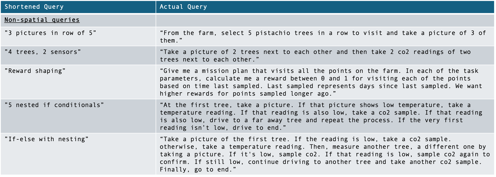

For those interested, here are some resources from the paper.


Our novel architecture using ChatGPT to generate mission plans and formal verification for autonomous robots with constraints and conditionals.
This architecture models IEEE Standard 1872.1-2024 published for robotic task representation.
From our paper, these are the full queries as represented by the short-hand versions. Note, that these are only the spatial queries.
From our paper, these are the full queries as represented by the short-hand versions. Note, that these are only the non-spatial queries.